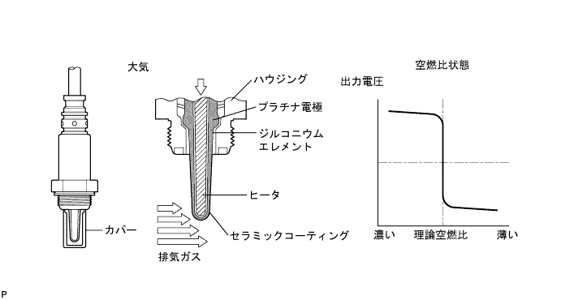
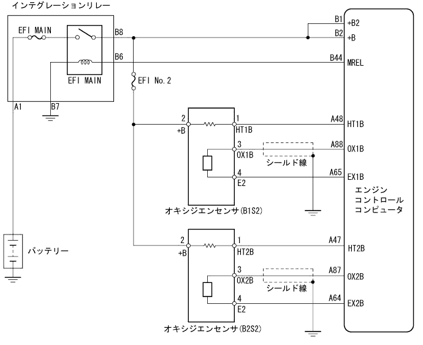
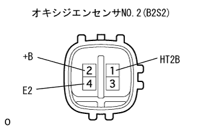
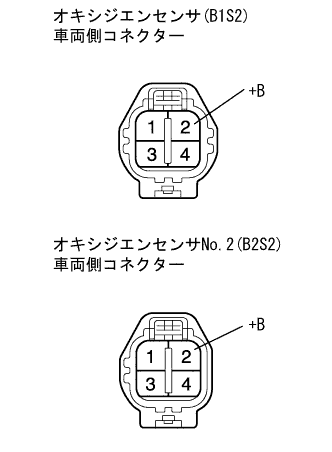
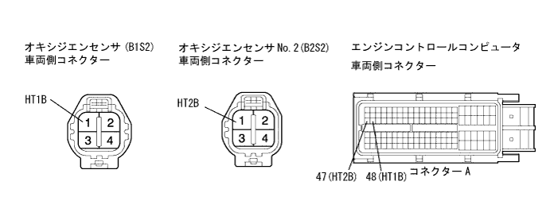

DTC P0037/29 O2 Sensor Heater Performance DegradationB1S2 |
DTC P0038/29 O2 Sensor Heater Overcurrent B1S2 |
DTC P0057/27 O2 Sensor Heater Performance DegradationB2S2 |
DTC P0058/27 O2 Sensor Heater Overcurrent B2S2 |

| DTC No. SAE/TCCS | DTC Detection Condition
| Inspection Area |
|---|---|---|
| P0037/29 (B1S2) P0057/27 (B2S2) |
|
|
| P0038/29 (B1S2) P0058/27 (B2S2) |
|
|

| Step 1 | Read DTC |
Connect SST (TaSCAN) to DLC3.
Turn the IG ON and read the DTCs following the SST (TaSCAN) screen display.
| Result | Proceed to |
|---|---|
| P0037/29 and P0038/29 output | A |
| P0057/27 and P0058/27 output | B |
|
| ||||
| A | |
| Step 2 | Inspect Oxygen Sensor (B1S2) |
 |
Disconnect the oxygen sensor connector.
Using SST (Toyota electrical tester), measure the resistance between the oxygen sensor connector terminals.
| Tester Connection (Terminal Symbol) | Condition | Standard |
|---|---|---|
| 1(HT1B) - 2(+B) | 20°C | 11 to 16Ω |
| 1(HT1B) - 4(E2) | Always | 10k Ω or higher |
| Result | Proceed to |
|---|---|
| NG | A |
| OK | B |
|
| ||||
| NG | ||
| ||
| Step 3 | Inspect Oxygen Sensor NO.2 (B2S2) |
 |
Disconnect the oxygen sensor NO.2 connector.
Using SST (Toyota electrical tester), measure the resistance between the oxygen sensor NO.2 connector terminals.
| Tester Connection (Terminal Symbol) | Condition | Standard |
|---|---|---|
| 1(HT2B) - 2(+B) | 20°C | 11 to 16Ω |
| 1(HT2B) - 4(E2) | Always | 10k Ω or higher |
|
| ||||
| OK | |
| Step 4 | Inspect Wire Harness and Connector (Power Source Circuit) |
 |
Turn IG ON.
Using SST (Toyota electrical tester), measure the voltage between the oxygen sensor connector terminals.
| Tester Connection (Terminal Symbol) | Condition | Standard |
|---|---|---|
| 2 (+B) - Body ground | IG ON | 11 to 14V |
| Tester Connection (Terminal Symbol) | Condition | Standard |
|---|---|---|
| 2 (+B) - Body ground | IG ON | 11 to 14V |
|
| ||||
| OK | |
| Step 5 | Inspect Wire Harness and Connector (Engine Control Computer - Oxygen Sensor) |
ReferenceDisconnect connector A of the engine control computer.
Using the SST (Toyota electrical tester), measure the resistance between each terminal. (For Terminals of ECU, see)

| Tester Connection (Terminal Symbol) | Condition | Standard |
|---|---|---|
| A48(HT1B) -1(HT1B) | Always | Below 1 Ω |
| A47(HT2B) - 1(HT2B) | Always | Below 1 Ω |
| Tester Connection (Terminal Symbol) | Condition | Standard |
|---|---|---|
| A48 (HT1B) and 1 (HT1B) - other terminals and body ground | Always | 10k Ω or higher |
| A47 (HT2B) and 1 (HT2B) - other terminals and body ground | Always | 10k Ω or higher |
|
| ||||
| OK | ||
| ||